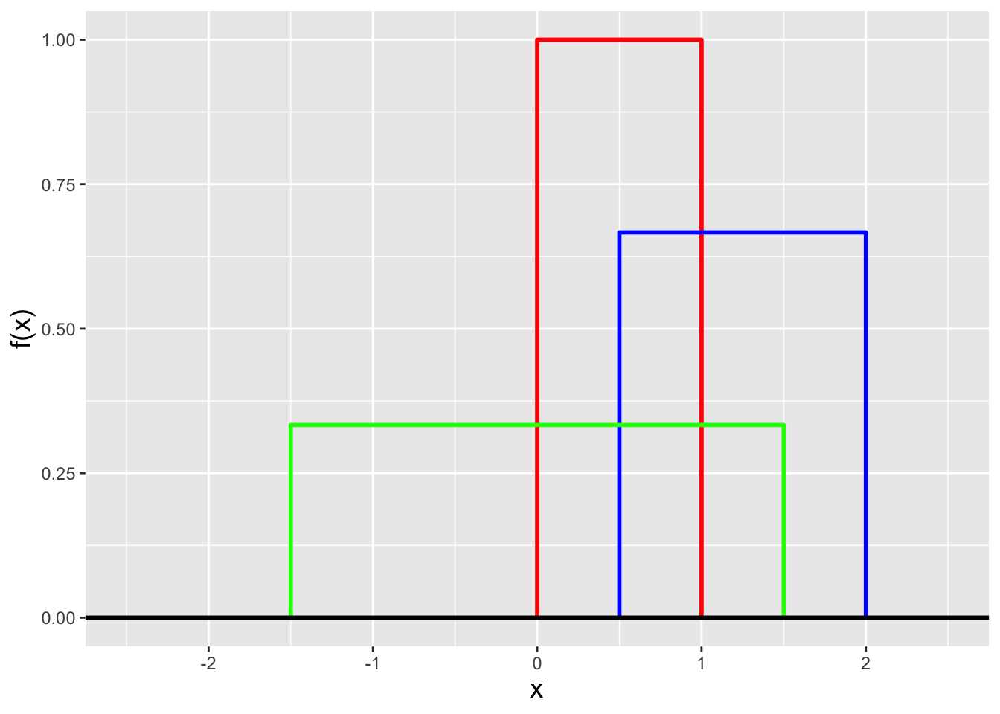
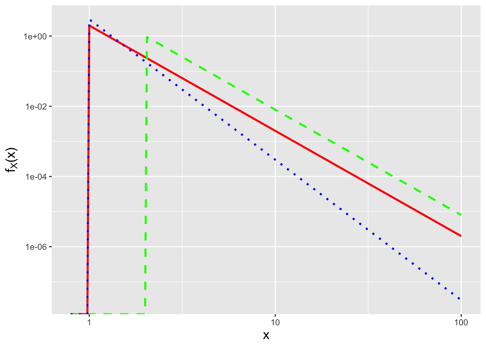
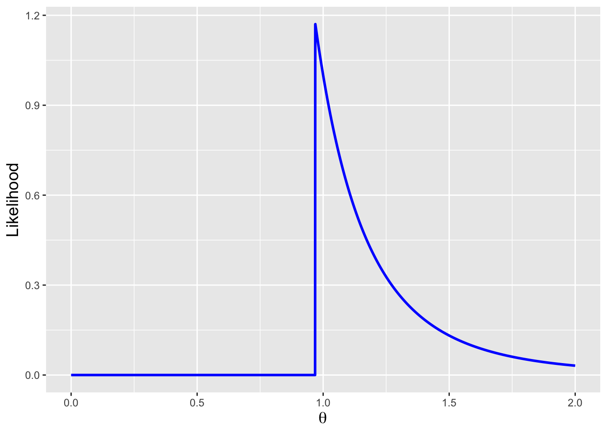
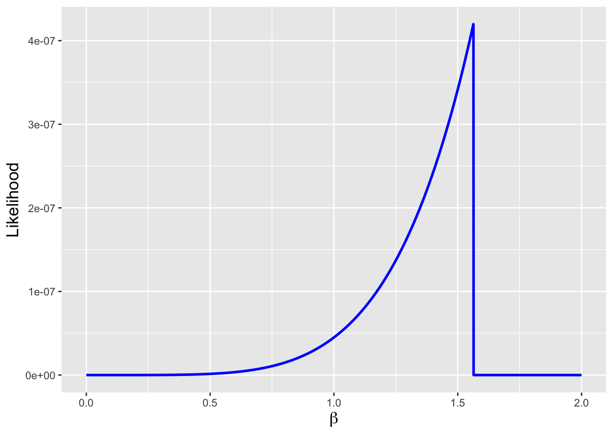
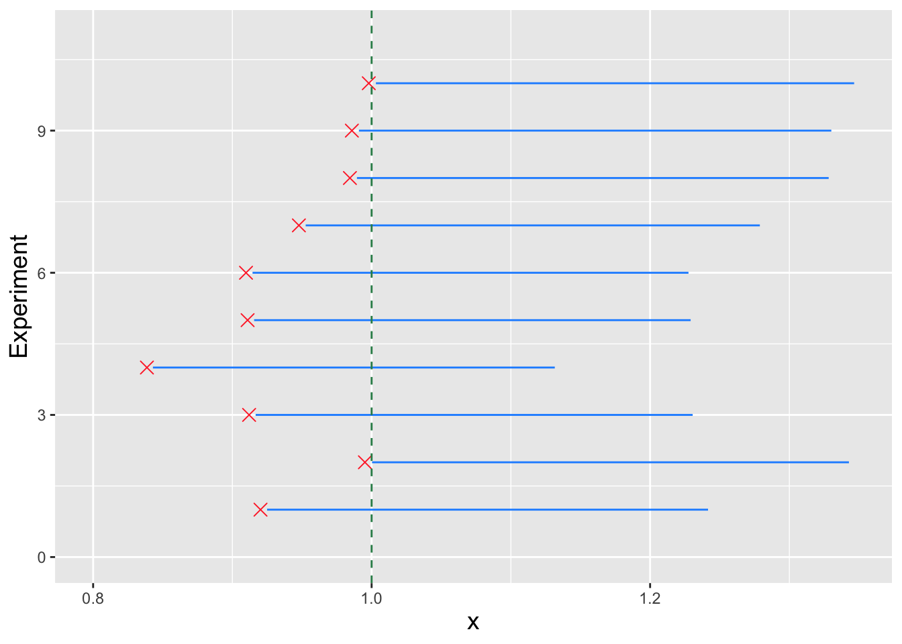
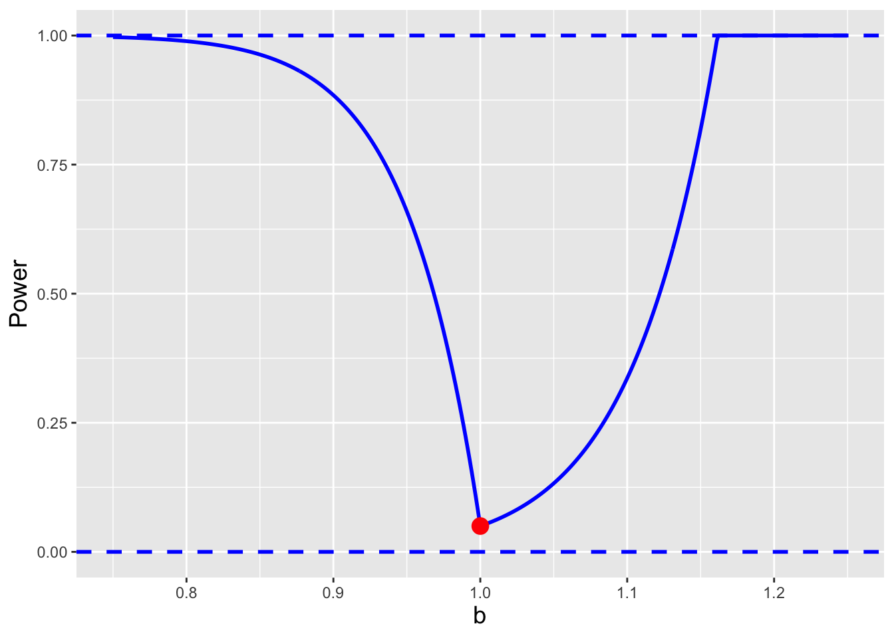

5 Distributions with Domain-Specifying Parameters
Let \(\{X_1,\ldots,X_n\}\) be \(n\) independent and identically distributed data sampled according to a distribution \(P(\theta)\).
- \(\theta\) is a domain-specifying parameter if, e.g., all the sampled data have values \(\leq \theta\).
This chapter is all about the quirks that we observe when we work with domain-specifying parameters, ones that affect the determination of maximum-likelihood and minimum-variance unbiased estimators, how we go about constructing hypothesis tests, etc.
5.1 Distribution Examples
What to take away from this section:
While there are many distributions that feature domain-specifying parameters, in this chapter we will focus our attention on two:
the uniform distribution, a finite distribution whose probability density function has the domain \([a,b]\); and
the Pareto distribution, a semi-infinite distribution whose pdf has the domain \([b,\infty)\).
Many probability distributions have parameters that bound their domain. In this chapter, we will concentrate on two in particular that are often used in inferential analyses:
- the uniform distribution; and
- the Pareto distribution.
Uniform Distribution. The uniform distribution is often used within the realm of probability, in part because of its utility and in part because of its simplicity. We have touched upon this distribution previously, such as when we discussed how hypothesis test \(p\)-values are distributed uniformly between 0 and 1 when the null hypothesis is correct. Why do we return to the uniform distribution now? Because it is slightly different from other distributions: its two parameters, often denoted \(a\) and \(b\) (where \(b > a\)), do not dictate the shape of its probability density function, but rather its domain.
Recall: a probability density function is one way to represent a continuous probablity distribution, and it has the properties (a) \(f_X(x) \geq 0\) and (b) \(\int_x f_X(x) dx = 1\), where the integral is over all values of \(x\) in the distribution’s domain.
The uniform pdf is defined as \[ f_X(x) = \frac{1}{b-a} \,, \] where \(x \in [a,b]\); \(f_X(x)\) is thus constant between \(a\) and \(b\). (See Figure 5.1.) This means that we can think of the uniform distribution “geometrically,” as the following is true: \[ \underbrace{(b-a)}_{\mbox{domain}} \cdot \underbrace{\frac{1}{b-a}}_{f_X(x)} = 1 \] If we know the domain of the pdf, we immediately know \(f_X(x)\); conversely, if we know \(f_X(x)\), we immediately know the width of the domain (but not \(a\) and \(b\) themselves).

Figure 5.1: Three examples of uniform probability density functions: Uniform(0,1) (solid red line), Uniform(0.5,2) (dashed green line), and Uniform(-1.5,1.5) (dotted blue line).
Recall: the cumulative distribution function, or cdf, is another means by which to encapsulate information about a probability distribution. For a continuous distribution, it is defined as \(F_X(x) = \int_{y \leq x} f_Y(y) dy\), and it is defined for all values \(x \in (-\infty,\infty)\), with \(F_X(-\infty) = 0\) and \(F_X(\infty) = 1\).
The cdf for a uniformly distributed random variable is \[ F_X(x) = \int_a^x f_Y(y) dy = \int_a^x \frac{1}{b-a} dy = \frac{x-a}{b-a} ~~ x \in [a,b] \,, \] with a value of 0 for \(x < a\) and 1 for \(x > b\). (We can quickly confirm that the derivative of the cdf yields the pdf. Recall that for continuous distributions, \(f_X(x) = dF_X(x)/dx\).)
Recall: an inverse cdf function \(F_X^{-1}(q)\) takes as input a distribution quantile \(q \in [0,1]\) and returns the value of \(x\) such that \(q = F_X(x)\).
The inverse cdf is exceptionally simple to compute: \[ q = \frac{x-a}{b-a} ~~ \Rightarrow ~~ x = (b-a)q + a \,. \]
Pareto Distribution. The Pareto [puh-RAY-toh] distribution, also known as the power-law distribution, has the probability density function \[ f_X(x) = \frac{a b^a}{x^{a+1}} \,, \] where \(a > 0\) and \(x \in [b,\infty)\). \(b\) is thus a domain-specifying parameter. See Figure 5.2. Many phenomena are linked to this distribution\(-\)the sizes of asteroids in the Solar System, the sizes of human settlements, personal wealth, etc.\(-\)and it is popularly known for spawning the so-called “80-20 rule”: e.g., 80% of wealth is tied to 20% of the population. (Note that this rule is linked to a specific value of \(a\) and is not meant to be taken as an iron-clad law that spans across disciplines.)

Figure 5.2: Three examples of Pareto probability density functions: Pareto(\(a\)=2,\(b\)=1) (solid red line), Pareto(\(a\)=3,\(b\)=1) (dashed green line), and Pareto(\(a\)=2,\(b\)=2) (dotted blue line). Note that the pdfs are displayed on a log-log scale, given how quickly they decrease towards zero.
The cdf for a Pareto distribution is derived in an example later in this chapter; for completeness, it is \[ F_X(x) = 1 - \left(\frac{x}{b}\right)^a \,, \] and thus the inverse cdf is \[ x = \frac{b}{(1-q)^{1/a}} \,. \]
5.1.1 Uniform Random Variable: Expected Value and Variance
Recall: the expected value of a continuously distributed random variable is \[ E[X] = \int_x x f_X(x) dx\,, \] where the integral is over all values of \(x\) within the domain of the pdf \(f_X(x)\). The expected value is equivalent to a weighted average, with the weight for each possible value of \(x\) given by \(f_X(x)\).
The expected value of a random variable drawn from a Uniform(\(a,b\)) distribution is \[\begin{align*} E[X] &= \int_a^b x f_X(x) dx = \int_a^b \frac{x}{b-a} dx \\ &= \frac{1}{b-a} \left. \frac{x^2}{2} \right|_a^b = \frac{1}{b-a} \frac{b^2-a^2}{2} = \frac{1}{b-a} \frac{(b-a)(b+a)}{2} = \frac{a+b}{2} \,. \end{align*}\]
Recall: the variance of a continuously distributed random variable is \[ V[X] = \int_x (x-\mu)^2 f_X(x) dx = E[X^2] - (E[X])^2\,, \] where the integral is over all values of \(x\) within the domain of the pdf \(f_X(x)\). The variance represents the square of the “width” of a probability density function, where by “width” we mean the range of values of \(x\) for which \(f_X(x)\) is effectively non-zero.
To find the variance, we work with the shortcut formula: \(V[X] = E[X^2] - (E[X])^2\). We know \(E[X]\) already; as for \(E[X^2]\), we utilize the Law of the Unconscious Statistician: \[\begin{align*} E[X^2] = \int_a^b x^2 f_X(x) dx &= \int_a^b \frac{x^2}{b-a} dx = \frac{1}{b-a} \left. \frac{x^3}{3} \right|_a^b = \frac{b^3-a^3}{3(b-a)} \\ &= \frac{(b-a)(a^2+ab+b^2)}{3(b-a)} = \frac{1}{3}\left(a^2 + ab + b^2\right) \,. \end{align*}\] Thus \[\begin{align*} V[X] &= \frac{1}{3}\left(a^2 + ab + b^2\right) - \left(\frac{a+b}{2}\right)^2 = \frac{1}{3}\left(a^2 + ab + b^2\right) - \frac{1}{4}\left(a^2+2ab+b^2\right) \\ &= \frac{1}{12}\left(4a^2 + 4ab + 4b^2 - 3a^2 - 6ab - 3b^2\right) = \frac{1}{12}\left(a^2 - 2ab + b^2 \right) = \frac{(a-b)^2}{12} \,. \end{align*}\]
5.1.2 Uniform Distribution: Order Statistics
Recall: order statistics are observed data ranked in ascending order (e.g., \(X_{(1)}\) is the minimum observed value in a set of \(n\) iid data, while \(X_{(n)}\) is the maximum observed value). For a continuous distribution, the probability density function for \(X_{(j)}\) is \[ f_{(j)}(x) = \frac{d}{dx}F_{(j)}(x) = \frac{n!}{(j-1)!(n-j)!} f_X(x) [F_X(x)]^{j-1} [1 - F_X(x)]^{n-j} \,. \]
In an example in Chapter 3, we showed that given a set of \(n\) iid data sampled according to a Uniform(0,1) distribution, where \(n\) is an odd number, the sample median is sampled according to a Beta\(((n+1)/2,(n+1)/2)\) distribution. For completeness, we will show here that all the order statistics are beta-distributed. We recall that within the domain of the Uniform(0,1) distribution, \(f_X(x) = 1\) and \(F_X(x) = x\), and write down the order statistic and beta pdfs side-by-side: \[ \frac{n!}{(j-1)!(n-j)!} x^{j-1} (1 - x)^{n-j} = \frac{\Gamma(n+1)}{\Gamma(j) \Gamma(n-j+1)} x^{j-1} (1 - x)^{n-j} ~~~ \leftrightarrow ~~~ \frac{\Gamma(a+b)}{\Gamma(a) \Gamma(b)} x^{a-1} (1-x)^{b-1} \,. \] Immediately, we can identify that \(a = j\) and \(b-1 = n-j\), or that \(b = n-j+1\). Hence \(X_{(j)} \sim \mbox{Beta}(j,n-j+1)\).
As a small illustration, we can use this information to easily determine, e.g., the probability that the fourth smallest of nine Uniform(0,1) random variables has a value between 0.3 and 0.4:
## [1] 0.2475.1.3 Pareto Random Variable: Expected Value
The expected value of a Pareto random variable is \[\begin{align*} E[X] = \int_b^\infty x \frac{a b^a}{x^{a+1}} dx &= a b^a \int_b^\infty \frac{x}{x^{a+1}} dx = a b^a \int_b^\infty x^{-a} dx \\ &= a b^a \left. \frac{1}{-a+1} x^{-a+1} \right|_b^\infty \\ &= \frac{a b^a}{1-a} \left( 0 - b^{1-a} \right) \\ &= \frac{a b}{a-1} \,. \end{align*}\] However, note how the integral is that of \(1/x^a\): the integral diverges if \(a \leq 1\). So in the regime \(a \in (0,1]\), \(E[X] = \infty\).
We leave it as an exercise to the reader to show that the variance of the Pareto distribution is \[ V[X] = \frac{a b^2}{(a-1)^2 (a-2)} \] for \(a > 2\), and is infinite otherwise.
5.1.4 Discrete Uniform Distribution
In this chapter, we will be concentrating on continuous distributions that have domain-specifying parameters (specifically, the uniform and Pareto distributions). However, for completeness we will touch upon the commonly used discrete analogue to the uniform distribution.
The discrete uniform distribution is technically defined as having the domain \(\{x_1,\ldots,x_m\}\), with the probability masses at each value being \(p_X(x) = 1/m\), but in common usage it is defined over a sequence of non-negative integers, from \(a\) to \(b\). (The rolls of a fair, six-sided die, where \(a = 1\) and \(b = 6\), would be governed by the discrete uniform distribution.) When we assume a sequence of integers, the cumulative distribution function within the domain is \[ F_X(x) = \frac{\lfloor x \rfloor - a + 1}{n} \,, \] where \(x \in [a,b]\), and \(\lfloor x \rfloor\) is the largest integer that is smaller than or equal to \(x\), while the inverse cdf is given by the generalized inverse cdf formalism that we’ve previously seen for discrete distributions.
Note that there are no standard
Rfunctions of the formxdiscunif()for computing the pmf or cdf of the discrete uniform distribution, or for sampling from it. (See, however, thexdunif()functions defined within the contributedextraDistrpackage.) However, the reader should hopefully realize that it is simple enough to create such functions for one’s own use. There are four standard functions associated with any distribution: the one prefaced bydthat returns the value of the probability mass function or probability density function, given a coordinate \(x\); the one prefaced bypthat returns the output of the cumulative distribution function, given \(x\); the one prefacedqthat returns the output of the inverse cdf, given a quantile \(q \in [0,1]\); and the random sampler, a function prefaced byr.
For the discrete uniform distribution, one can code the probability mass function as follows:
ddiscunif <- function(x, min=0, max=1, step=1)
{
y <- seq(min, max, by=step)
if ( x %in% y ) return(1/length(y))
return(0)
}
round(ddiscunif(4, min=1, max=6), 3)## [1] 0.167As for the cumulative distribution function:
pdiscunif <- function(x, min=0, max=1, step=1)
{
y <- seq(min, max, by=step)
w <- which(y<=x)
if ( length(w) == 0 ) return(0)
return(length(w)/length(y))
}
round(pdiscunif(4, min=1, max=6), 3)## [1] 0.667The inverse cdf implements the generalized inverse algorithm:
qdiscunif <- function(q, min=0, max=1, step=1)
{
y <- seq(min, max, by=step)
if ( q == 0 ) return(min(y))
if ( q == 1 ) return(max(y))
cdf <- (1:length(y))/length(y)
w <- which(cdf>=q)
if ( length(w) == 0 ) return(max(y))
return(y[min(w)])
}
qdiscunif(0.55, min=1, max=6)## [1] 4And last, the random data generator:
rdiscunif <- function(n, min=0, max=1, step=1)
{
y <- seq(min, max, by=step)
s <- sample(length(y), n, replace=TRUE)
return(y[s])
}
set.seed(236) # set to ensure consistent output
rdiscunif(10,min=1,max=6)## [1] 6 6 6 3 3 4 1 1 5 45.2 Linear Functions of Random Variables
What to take away from this section:
The method of moment-generating functions allows us to determine that…
the sum of \(n\) iid Uniform(0,1) random variables is sampled according to an Irwin-Hall distribution;
the mean of \(n\) iid Uniform(0,1) random variables is sampled according to an Bates distribution; and
we cannot use the method of mgfs to say anything about functions of Pareto random variables.
Foreshadowing: these results are shown for completeness but they do not actually help us make optimal statistical inferences about distribution bounds; as we will see in the next section, a sufficient statistic for a distribution bound is actually an order statistic, and that is what we would use for optimal inference.
Let’s assume we are given \(n\) iid random variables \(\{X_1,\ldots,X_n\}\) sampled according to some distribution that has a domain-specifying parameter. What is the distribution of \(Y = \sum_{i=1}^n a_i X_i\)?
Recall: the moment-generating function, or mgf, is a means by which to encapsulate information about a probability distribution. When it exists, the mgf is given by \(E[e^{tX}]\). If \(Y = \sum_{i=1}^n a_iX_i\), then \(m_Y(t) = m_{X_1}(a_1t) m_{X_2}(a_2t) \cdots m_{X_n}(a_nt)\); if we can identify \(m_Y(t)\) os the mgf for a known family of distributions, then we can immediately identify the distribution of \(Y\) and the parameters of that distribution.
Below we discuss the distributions of the sample sum and sample mean for uniformly distributed data. Note that for the Pareto distribution, the mgf does not exist, and so to perform statistical inference with Pareto-distributed data with, e.g., the sample sum or the sample mean, we would have no choice but to utilize a simulation framework.
5.2.1 Uniform Data: Sample Sum and Mean Distributions
Let’s assume that we are given \(n\) iid Uniform random variables: \(X_1,X_2,\ldots,X_n \sim\) Uniform(\(a,b\)). What is, e.g., the distribution of the sum \(Y = \sum_{i=1}^n X_i\)?
We start by deriving the moment-generating function for the uniform distribution: \[\begin{align*} m_X(t) = E[e^{tX}] &= \int_a^b \frac{e^{tx}}{b-a} dx = \frac{1}{b-a} \left. \frac{1}{t}e^{tx} \right|_a^b = \frac{e^{tb}-e^{ta}}{t(b-a)} \,. \end{align*}\] Thus the mgf for the sum \(Y = \sum_{i=1}^n X_i\) is \[ m_Y(t) = \prod_{i=1}^n m_{X_i}(t) = \left( \frac{e^{tb}-e^{ta}}{t(b-a)} \right)^n \,. \] This expression does not simplify such that we recognize the distribution of \(Y\). If \(a = 0\) and \(b = 1\), it turns out that the mgf does take on the form of that for an Irwin-Hall distribution. An Irwin-Hall random variable converges in distribution to a normal random variable as \(n \rightarrow \infty\).
We find ourselves in a similar situation if we look at the sample mean \(\bar{X} = Y/n\): \[ m_{\bar{X}}(t) = \prod_{i=1}^n m_{X_i}\left(\frac{t}{n}\right) = \left( \frac{n(e^{tb/n}-e^{ta/n})}{t(b-a)} \right)^n \,. \] If \(a = 0\) and \(b = 1\), \(\bar{X}\) is sampled from a Bates distribution. A Bates random variable converges in distribution to a normal random variable as \(n \rightarrow \infty\). For all other combinations of \(a\) and \(b\), we cannot write down a specific functional form for the sampling distribution of \(\bar{X}\) and thus we would have to perform simulations to test hypotheses, etc. (However, we note that because statistical inference for a uniform distribution involves determining the lower and/or upper bounds, we can utilize order statistics for inference instead of \(\bar{X}\). See the next section below.)
5.3 Point Estimation
What to take away from this section:
A sufficient statistic for a distribution lower bound is the smallest-observed datum, \(X_{(1)}\), while for an upper bound, it is the largest-observed datum, \(X_{(n)}\).
Sufficient statistics provide both the MLE and the MVUE for a distribution bound.
Previously, we described two commonly used point estimators: the maximum likelihood estimator (or MLE) and the minimum variance unbiased estimator (or MVUE). Below, we show how one would work with both in the context of estimating domain-specifying parameters.
Recall: the value of \(\theta\) that maximizes the likelihood function is the maximum likelihood estimate, or MLE, for \(\theta\). The maximum is, thus far, found by taking the (partial) derivative of the (log-)likelihood function with respect to \(\theta\), setting the result to zero, and solving for \(\theta\). That solution is the maximum likelihood estimate \(\hat{\theta}_{MLE}\). Also recall the invariance property of the MLE: if \(\hat{\theta}_{MLE}\) is the MLE for \(\theta\), then \(g(\hat{\theta}_{MLE})\) is the MLE for \(g(\theta)\).
Now that we have recalled how maximum likelihood estimation works, we can state that this is not how the MLE is found for a domain-affecting parameter! (Hence the “thus far” in the recall statement above.) Let’s assume, for instance, that we sample \(n\) iid random variables from a Uniform(\(0,\theta\)) distribution. The likelihood is \[ \mathcal{L}(\theta \vert \mathbf{x}) = \frac{1}{\theta^n} \,. \] This means that the smaller the value of \(\theta\) is, the larger the likelihood will be. So how small can \(\theta\) be? We can answer this intuitively: the domain \([0,\theta]\) has to just encompass all the observed data, i.e., \[ \hat{\theta}_{MLE} = X_{(n)} \,. \] If \(\theta\) were smaller, \(X_{(n)}\) would lie outside the domain. It is fine for \(\theta\) to be larger, since then all the data lie in the domain \([0,\theta]\)…but the larger \(\theta\) is, the smaller the likelihood.
We plot an example likelihood function in Figure 5.3. We observe immediately that the usual MLE algorithm will not work here, as the likelihood function is not differentiable at \(\theta = X_{(n)}\). All we can do is, e.g., plot the likelihood and identify the MLE as that value for which the likelihood is maximized (or identify the value intuitively as we do above).

Figure 5.3: The likelihood function given \(n=5\) data drawn from a Uniform(0,\(\theta\)) distribution, with \(\theta = 1\). As \(\theta\) cannot be smaller than the maximum observed value, the likelihood is zero for \(\theta < X_{(n)}\); it is \(1/\theta^n\) for \(\theta \geq X_{(n)}\). The maximum likelihood estimate is thus \(X_{(n)}\) itself; as the likelihood function is not differentiable at this point, the MLE cannot be found via the algorithm that we have used previously.
Recall: a sufficient statistic for a population parameter \(\theta\) captures all information about \(\theta\) contained in a data sample; no additional statistic will provide more information about \(\theta\). Sufficient statistics are not unique: one-to-one functions of sufficient statistics are themselves sufficient statistics.
Before we discuss sufficient statistics in the context of working with domain-specifying parameters, it is useful to (re-)introduce the indicator function. This function, mentioned briefly in Chapter 1, takes on the value 1 if a specified condition is met and 0 otherwise. For instance, \[ \mathbb{I}_{x_i \in [0,1]} = \left\{ \begin{array}{cl} 1 & x_i \in [0,1] \\ 0 & \mbox{otherwise} \end{array} \right. \,. \] One use for the indicator function is to, well, indicate the domain of a pmf or pdf. For instance, we can write \[ f_X(x) = \left\{ \begin{array}{ll} e^{-x} & x \geq 0 \\ 0 & \mbox{otherwise} \end{array} \right. \] to express that the exponential distribution with rate \(\theta = 1\) is defined within the domain \(x \in [0,\infty)\), or, equivalently, we can write \[ f_X(x) = e^{-x} \mathbb{I}_{x \in [0,\infty)} \,. \] The latter form expresses the same information in a more condensed fashion.
So…why would we use indicator functions now?
Let’s suppose we sample \(n\) iid data \(\{X_1,\ldots,X_n\}\) from a uniform distribution with lower bound 0 and upper bound \(\theta\), and our goal is to define a sufficient statistic for \(\theta\). Let’s work with the factorization criterion: \[ \mathcal{L}(\theta \vert \mathbf{x}) = g(\mathbf{x},\theta) \cdot h(\mathbf{x}) \,. \] The likelihood is \[ \mathcal{L}(\theta \vert \mathbf{x}) = \prod_{i=1}^n f_X(x_i \vert \theta) = \prod_{i=1}^n \frac{1}{\theta} = \frac{1}{\theta^n} \,. \] OK…no…wait: there are no data in this expression, so we cannot (yet) read off a sufficient statistic for \(\theta\). Let’s re-express the pdf as \[ f_X(x) = \frac{1}{\theta} \mathbb{I}_{x \in [0,\theta]} \] and rewrite the likelihood as \[ \mathcal{L}(\theta \vert \mathbf{x}) = \prod_{i=1}^n f_X(x_i \vert \theta) = \frac{1}{\theta^n} \prod_{i=1}^n \mathbb{I}_{x_i \in [0,\theta]} \,. \] The product of indicator functions will equal 1 if and only if all data lie in the domain \(x \in [0,\theta]\). This is equivalent to saying that \(\theta \geq X_{(n)}\), the order statistic representing the maximum observed datum. Thus \(X_{(n)}\) is a sufficient statistic for \(\theta\): we know \(\theta\) is greater than this statistic’s value, and none of the data aside from \(X_{(n)}\) provide additional information about \(\theta\).
The upshot: when \(\theta\) is a domain-specifying parameter, a sufficient statistic for \(\theta\) will be an order statistic (or any one-to-one function of that order statistic).
When we first introduced the factorization criterion and sufficient statistics in Chapter 3, we did it so that ultimately we could write down the minimum variance unbiased estimator (or MVUE).
Recall: the bias of an estimator is the difference between the average value of the estimates it generates and the true parameter value. If \(E[\hat{\theta}-\theta] = 0\), then the estimator \(\hat{\theta}\) is said to be unbiased.
Recall: deriving the minimum variance unbiased estimator involves two steps:
- factorizing the likelihood function to uncover a sufficient statistic \(U\) (that we assume is both minimal and complete); and
- finding a function \(h(U)\) such that \(E[h(U)] = \theta\).
For instance, if \(\{X_1,\ldots,X_n\}\) are iid data sampled according to a Uniform(\(0,\theta\)) distribution, can we define an MVUE for \(\theta\)? The answer is yes…as we will show in an example below.
(For completeness, we should mention that the method of moments estimator for \(\theta\) can never be a sufficient statistic, since MoM estimators are not constructed from order statistics.)
5.3.1 Uniform Domain Parameter: MLE
Let \(\{X_1,\ldots,X_n\}\) be \(n\) iid data sampled according to a Uniform(\(0,\theta\)) distribution. As shown above, the MLE for \(\theta\) is \(X_{(n)}\), the maximum observed datum. The properties of estimators that we have examined thus far include the bias (are our estimates offset from the truth, on average?), the variance (over how large a range do our estimates vary?), etc. Let’s look at these properties here.
Recall: the maximum of \(n\) iid random variables sampled from a pdf \(f_X(x)\) has a sampling distribution given by \[ f_{(n)}(x) = n f_X(x) [ F_X(x) ]^{n-1} \,, \] where \(F_X(x)\) is the associated cdf.
For the Uniform(\(0,\theta\)) distribution, \[ f_X(x) = \frac{1}{\theta} ~~\mbox{and}~~ F_X(x) = \int_0^x f_Y(y) dy = \int_0^x \frac{1}{\theta} dy = \frac{x}{\theta} \,, \] so \[ f_{(n)}(x) = n \frac{1}{\theta} \left[ \frac{x}{\theta} \right]^{n-1} = n \frac{x^{n-1}}{\theta^n} \,. \] The expected value of \(X_{(n)}\) is thus \[ E[X_{(n)}] = \int_0^\theta x n \frac{x^{n-1}}{\theta^n} dx = \left. \frac{n}{(n+1)\theta^n} x^{n+1} \right|_0^\theta = \frac{n}{n+1} \theta \,, \] and the bias of the MLE for \(\theta\) is thus \[ B[\hat{\theta}_{MLE}] = E[\hat{\theta}_{MLE}] - \theta = \frac{n}{n+1}\theta - \theta = -\frac{1}{n+1}\theta \,. \] The MLE is biased, but as we expect it is at least asymptotically unbiased, as the bias goes to zero as \(n \rightarrow \infty\).
Recall: an estimator is consistent if its mean-squared error, \(B[\hat{\theta}]^2 + V[\hat{\theta}]\), goes to zero as the sample size \(n\) goes to infinity.
The variance of the MLE is \[ V[\hat{\theta}_{MLE}] = E[\hat{\theta}_{MLE}^2] - \left(E[\hat{\theta}_{MLE}\right)^2 = E[X_{(n)}^2] - (E[X_{(n)}])^2 \,. \] To derive the variance, we need to determine \(E[X_{(n)}^2]\): \[ E[X_{(n)}^2] = \int_0^\theta x^2 n \frac{x^{n-1}}{\theta^n} dx = \left. \frac{n}{(n+2)\theta^n} x^{n+2} \right|_0^\theta = \frac{n}{n+2} \theta^2 \,. \] So now we can write down that \[ V[\hat{\theta}_{MLE}] = \frac{n}{n+2}\theta^2 - \left( \frac{n}{n+1}\theta\right)^2 = \frac{n}{(n+2)(n+1)^2}\theta^2 \rightarrow \frac{\theta^2}{n^2} ~~\mbox{as}~~ n \rightarrow \infty\,. \] We observe that because the variance goes to zero as \(n \rightarrow \infty\), the mean-squared error does as well…and thus the MLE for \(\theta\) is a consistent estimator.
5.3.2 Pareto Domain Parameter: MLE
Recall that the Pareto distribution has the probability density function \[ f_X(x) = \frac{a b^a}{x^{a+1}} \,, \] where \(a > 0\) and \(x \in [b,\infty)\). Because \(b\) is a domain-specifying parameter, we find the MLE not via differentiation but rather by identifying that the likelihood is maximized when \(b\) is exactly equal to \(X_{(1)}\), i.e., \(\hat{b}_{MLE} = X_{(1)}\). See Figure 5.4.

Figure 5.4: The likelihood function given \(n=5\) data drawn from a Pareto(1,\(b\)) distribution, with \(b = 1\). As \(b\) cannot be larger than the minimum observed value, the likelihood is zero for \(b \geq X_{(1)}\); it is \(\theta^n(1/\prod_{i=1}^n x_i)^2\) for \(b < X_{(n)}\). The maximum likelihood estimate is thus \(X_{(1)}\) itself; as the likelihood function is not differentiable at this point, the MLE cannot be found via the algorithm we have used previously.
5.3.3 Uniform Domain Parameter: MVUE
Above, we determined that if we sample \(n\) iid data according to a Uniform\((0,\theta)\) distribution, a sufficient statistic for \(\theta\) is \(X_{(n)}\) and the expected value of \(X_{(n)}\) is \(n\theta/(n+1)\). Given this information, it is trivial to rearrange terms and to write down the MVUE for \(\theta\): \[ E\left[\frac{n+1}{n}X_{(n)}\right] = \theta ~~~ \Rightarrow ~~~ \hat{\theta}_{MVUE} = \frac{n+1}{n}X_{(n)} \,. \] The variance of \(\hat{\theta}_{MVUE}\) is \[\begin{align*} V[\hat{\theta}_{MVUE}] &= E\left[\left(\hat{\theta}_{MVUE}\right)^2\right] - \left( E\left[ \hat{\theta}_{MVUE} \right] \right)^2 \\ &= \frac{(n+1)^2}{n^2} \left( E[X_{(n)}^2] - (E[X_{(n)}])^2 \right) \,, \end{align*}\] where \[ E[X_{(n)}^2] = \int_0^\theta x^2 n \frac{x^{n-1}}{\theta^n} dx = \left. \frac{n}{(n+2)\theta^n} x^{n+2} \right|_0^\theta = \frac{n}{n+2} \theta^2 \,. \] Thus \[\begin{align*} V[\hat{\theta}_{MVUE}] &= \frac{(n+1)^2}{n^2} \left( \frac{n}{n+2} \theta^2 - \frac{n^2}{(n+1)^2} \theta^2 \right) \\ &= \frac{(n+1)^2}{n^2} \left( \frac{n(n+1)^2 - n^2(n+2)}{(n+2)(n+1)^2} \theta^2 \right) \\ &= \frac{(n+1)^2}{n^2} \left( \frac{n}{(n+2)(n+1)^2} \theta^2 \right) \\ &= \frac{1}{n(n+2)} \theta^2 \rightarrow \frac{\theta^2}{n^2} ~~\mbox{as}~~ n \rightarrow \infty \,. \end{align*}\] We observe that since the variance goes to zero as \(n \rightarrow \infty\), the MVUE is a consistent estimator…but does it achieve the Cramer-Rao Lower Bound (CRLB), the theoretical lower bound on the variance of unbiased estimators?
Recall: the Cramer-Rao Lower Bound (or CRLB) is the lower bound on the variance of any unbiased estimator. If an unbiased estimator achieves the CRLB, it is the MVUE…but it can be the case that the MVUE does not achieve the CRLB. For a discrete distribution, the CRLB is given by \[ V_{\rm CRLB}[\hat{\theta}] = -\left(nE\left[\frac{d^2}{d\theta^2} \log p_X(X \vert p) \right]\right)^{-1} = \frac{1}{nI(\theta)} \] where \(I(\theta)\) is the Fisher information: \[ I(\theta) = -E\left[ \frac{\partial^2}{\partial \theta^2} \log f_X(x \vert \theta) \right] \,. \]
It turns out that not only does it achieve the lower bound (which one can show equals \(\theta^2/n\)), but it even surpasses that bound, as \[ \frac{1}{n(n+2)} \theta^2 < \frac{1}{n} \theta^2 \,. \] Ultimately, we need not worry about this seemingly worrisome result, because one of the so-called regularity conditions that must hold for the bound calculation to be valid is that the log-likelihood is differentiable everywhere within a distribution’s domain…but this condition does not hold when we are working with domain-specifying parameters.
The variance of the MLE is similar to, but not exactly the same as, the variance for the MVUE, although the two variances converge to the same value in as \(n \rightarrow \infty\).
5.3.4 Pareto Domain Parameter: MVUE
The Pareto probability density function is \[ f_X(x) = \frac{a b^a}{x^{a+1}} \,, \] where \(a > 0\) and \(x \in [b,\infty)\). Let’s assume \(a\) is fixed. A sufficient statistic for \(b\), found via likelihood factorization, is \[ \mathcal{L}(b \vert \mathbf{x}) = \prod_{i=1}^n f_X(x_i) = \underbrace{b^{na}}_{g(\mathbf{x},b)} \cdot \underbrace{\frac{a^n}{(\prod_{i=1}^n x_i)^{a+1}}}_{h(\mathbf{x})} \,. \] Wait…again, as is the case for the uniform distribution, no data appear in the expression \(g(\cdot)\). So we would go back and introduce an indicator function into the pdf; it should be clear that when we do so, \(g(\mathbf{x},b)\) changes to \[ g(\mathbf{x},b) = b^{na} \prod_{i=1}^n \mathbb{I}_{x_i \in [b,\infty)} \] and thus that because all data have to be larger than \(b\), a sufficient statistic will be the minimum observed datum, \(X_{(1)}\).
To go from here to finding the MVUE, we need to derive a number of quantities:
- the cumulative distribution function for a Pareto distribution;
- the probability density function for the smallest-valued of \(n\) Pareto random variables; and
- the expected value of this smallest-valued random variable.
Let’s do each in turn.
As for the cdf: \[\begin{align*} F_X(x) = \int_b^x \frac{a b^a}{y^{a+1}} dy &= a b^a \int y^{-a-1} dy = a b^a \left. \frac{1}{-a} y^{-a} \right|_b^x \\ &= b^a \left. y^{-a} \right|_x^b = b^a \left( b^{-a} - x^{-a} \right) = 1 - \left(\frac{b}{x}\right)^a \,. \end{align*}\] The pdf for the smallest-valued of \(n\) iid Pareto data is given by \[\begin{align*} f_{(1)}(x) &= n f_X(x) \left[ 1 - F_X(x) \right]^{n-1} \\ &= n \frac{a b^a}{x^{a+1}} \left[ 1 - \left( 1 - \left[\frac{b}{x}\right]^a \right) \right]^{n-1} \\ &= n \frac{a b^a}{x^{a+1}} \left(\frac{b}{x}\right)^{na-a} \\ &= n \frac{a b^{na}}{x^{na+1}} \,. \end{align*}\] Last, the expected value of this datum is \[\begin{align*} E[X_{(1)}] &= \int_b^\infty n x \frac{a b^{na}}{x^{na+1}} = n a b^{na} \int_b^\infty x^{-na} dx \\ &= n a b^{na} \frac{1}{-na+1} \left. x^{-na+1} \right|_b^\infty \\ &= n a b^{na} \frac{1}{-na+1} \left( 0 - b^{-na+1} \right) \\ &= \frac{n a b}{na-1} \,. \end{align*}\] Hence we see that \[ E\left[\frac{na-1}{na} X_{(1)}\right] = b \] and that \[ \hat{b}_{\rm MVUE} = \frac{na-1}{na} X_{(1)} \,. \]
5.4 Confidence Intervals
What to take away from this section:
- Interval estimates for distribution bounds generated using sufficient statistics (i.e., order statistics) behave “properly” in that they do not overlap the value of the statistic itself.
Recall: a confidence interval is a random interval \([\hat{\theta}_L,\hat{\theta}_U]\) that overlaps (or covers) the true value \(\theta\) with probability \[ P\left( \hat{\theta}_L \leq \theta \leq \hat{\theta}_U \right) = 1 - \alpha \,, \] where \(1 - \alpha\) is the confidence coefficient. Note that this is a long-term probabilistic statement that is not to be applied to any one numerically evaluated interval: an evaluated interval either overlaps the true value, or it does not (and thus we cannot say there is a \(100(1-\alpha)\)-percent chance that \(\theta\) lies within the interval). We determine \(\hat{\theta}\) by solving the following equation: \[ F_Y(y_{\rm obs} \vert \theta) - q = 0 \,, \] where \(F_Y(\cdot)\) is the cumulative distribution function for the statistic \(Y\), \(y_{\rm obs}\) is the observed value of the statistic, and \(q\) is an appropriate quantile value that is determined using the confidence interval reference table introduced in section 16 of Chapter 1.
5.4.1 Uniform Domain Parameter: Interval Estimation
Recall that when we sample \(n\) iid data according to a Uniform(\(0,\theta\)) distribution, a sufficient statistic is \(Y = X_{(n)}\), which has probability density function \[ f_Y(y) = f_{(n)}(x) = n \frac{x^{n-1}}{\theta^n} \,, \] cumulative distribution function \[ F_Y(y) = F_{(n)}(x) = (x/\theta)^n \,, \] and expected value \[ E[Y] = E[X_{(n)}] = \frac{n}{n+1} \theta \,. \] Given that \(E[Y]\) increases with \(\theta\), we know that we will be working with quantities on the “yes” line of the confidence interval reference table.
To find the lower and upper bounds on \(\theta\), respectively, for a two-sided interval, we solve for \(\theta\) in the expressions \[\begin{align*} \left(\frac{X_{(n)}}{\theta}\right)^n - \left(1 - \frac{\alpha}{2}\right) &= 0 ~~~ \mbox{(lower)} \\ \left(\frac{X_{(n)}}{\theta}\right)^n - \frac{\alpha}{2} &= 0 ~~~ \mbox{(upper)} \,, \end{align*}\] and we find that \[ \hat{\theta}_L = \frac{X_{(n)}}{(1-\alpha/2)^{1/n}} ~~\mbox{and}~~ \hat{\theta}_U = \frac{X_{(n)}}{(\alpha/2)^{1/n}} \,. \]
In Figure 5.5, we display 10 separate 90 percent confidence intervals generated using data sampled according to a Uniform(0,1) distribution. In this figure, the maximum observed values for each dataset are shown as red crosses, while the intervals are displayed as blue lines. We immediately see one of the quirks associated with domain-specifying parameters: the observed data do not lie within the intervals (as they have previously) but rather outside of them. This is good: no observed value of \(X_{(n)}\) should be larger than the derived lower bound! (Otherwise it would be impossible to observe that value, if indeed the derived lower bound is the true value.)

Figure 5.5: Ten 90 percent confidence intervals, generated using data from 10 separate datasets of size \(n = 10\) sampled according to a Uniform(\(0,\theta\)) distribution. (Here, \(\theta = 1\).) The observed statistic values \(X_{(n)}\) are shown as red crosses; in each case, the values lie outside the derived intervals.
5.4.2 Uniform Domain Parameter: Confidence Coefficient
A confidence interval is a random interval \([\hat{\theta}_L,\hat{\theta}_U]\) that covers the true value \(\theta\) with probability \[ P\left( \hat{\theta}_L \leq \theta \leq \hat{\theta}_U \right) = 1 - \alpha \,, \] where \(1 - \alpha\) is the confidence coefficient. In Chapter 1, we make the point that technically, the confidence coefficient is the infimum, or minimum value, of \(P(\hat{\theta}_L \leq \theta \leq \hat{\theta}_U)\). What does this actually mean in practice?
In the example above, we show that the interval estimate with confidence coefficient \(1-\alpha\) for the uniform upper bound \(\theta\) has the form \([aX_{(n)},bX_{(n)}]\). Can we also define an appropriate interval estimator if, for instance, it has the form \([X_{(n)} + a,X_{(n)} + b]\)? The short answer is no…because the confidence coefficient will be zero! To see why, let’s work directly with the probability statement that defines the confidence coefficient: \[\begin{align*} P(X_{(n)} + a \leq \theta \leq X_{(n)} + b) &= P(\theta - b \leq X_{(n)} \leq \theta - a)\\ &= P(X_{(n)} \leq \theta - a) - P(X_{(n)} \leq \theta - b)\\ &= F_{(n)}(\theta-a) - F_{(n)}(\theta-b)\\ &= \left(\frac{\theta-a}{\theta}\right)^2 - \left(\frac{\theta-b}{\theta}\right)^2\\ &= \left(1-\frac{a}{\theta}\right)^2 - \left(1-\frac{b}{\theta}\right)^2 \,. \end{align*}\] The key to interpreting the last line above is that \(\theta\) is unknown (otherwise, why would we be constructing a confidence interval for it in the first place?), and thus can take on any allowable value. For an interval of the form \([aX_{(n)},bX_{(n)}]\), \(\theta\) does not appear, and thus the confidence coefficient is the user-set constant \(1 - \alpha\). Here, however, \[ \lim_{\theta \to \infty} P(X_{(n)} + a \leq \theta \leq X_{(n)} + b) = 0 \,, \] and thus the confidence coefficient (or the proportion of computed intervals that overlap the true value \(\theta\)) goes to zero. Thus an interval estimator of the form \([aX_{(n)},bX_{(n)}]\) is a better one than one of the form \([X_{(n)} + a,X_{(n)} + b]\).
The upshot: one cannot just write down any interval and assume that it comes with a guarantee of non-zero coverage! It turns out that by working with the sampling distributions of statistics, useful interval estimators are naturally defined for us.
5.4.3 Pareto Domain Parameter: Interval Estimation
As was mentioned earlier in this chapter, a moment-generating function does not exist for the Pareto distribution. Thus if we sample \(n > 1\) iid data according to this distribution (with fixed parameter \(a\)), we cannot begin to analytically identify the sampling distribution for, e.g., \(Y = \sum_{i=1}^n X_i\)…so we would have to utilize a simulation framework to construct intervals with this statistic. But it turns out that this doesn’t actually matter to us, as we have since found out that a sufficient statistic for the Pareto \(b\) parameter is \(X_{(1)}\), and we certainly do know the cdf of the sampling distribution for that: \[\begin{align*} F_{(1)}(x) &= \int_b^x \frac{n a b^{na}}{y^{na+1}} dy = n a b^{na} \int_b^x y^{-na-1} dy \\ &= n a b^{na} \frac{1}{-na} \left. y^{-na} \right|_b^x = - b^{na} \left( x^{-na} - b^{-na} \right) \\ %= 1 - \left(\frac{b}{x}\right)^{na} \,. \end{align*}\] If we solve the general equation \(F_Y(y_{\rm obs} \vert \theta) - q = 0\), we find that \[ \hat{b}(q) = x_{(1),\rm obs} (1 - q)^{1/na} \,. \]
But, for review purposes, let’s say we really want to utilize the sample mean as our interval-constructing statistic. (We shouldn’t, because it is not a sufficient statistic for \(b\), but we are headstrong and are going to plow ahead.) Below we show a simulation framework for estimating a 95% upper bound for \(b\), given that \(a = 3\) and \(n = 8\). Note that the expected value of \(\bar{X}\) increases with \(b\), as the reader can verify, so \(q = \alpha = 0.05\).
# generate data
set.seed(236)
num.sim <- 100000
n <- 8
a <- 3
b <- 1.5
X.obs <- extraDistr::rpareto(n, a=a, b=b) # avoid namespace conflict
y.obs <- mean(X.obs)
min(X.obs)## [1] 1.582117# now find a 95% upper bound
alpha <- 0.05
f <- function(b, a, n, y.obs, q, num.sim=1000000, seed=236)
{
set.seed(seed)
X <- matrix(extraDistr::rpareto(num.sim*n, a=a, b=b), nrow=num.sim)
Y <- rowMeans(X)
sum(Y <= y.obs)/num.sim - q
}
round(uniroot(f, c(0.001, 1000), a=a, n=n, y.obs=y.obs, q=alpha)$root, 3)## [1] 1.666The upper bound is 1.666. We can immediately see that this is problematic since the smallest value among our eight data is \(x_{(1),{\rm obs}} = 1.582\): we should not have an upper bound on \(b\) that exceeds any data values we observe! We can compare the sample mean upper bound against the value we would derive using \(x_{(1),{\rm obs}}\): \[ x_{(1),\rm obs} (1 - q)^{1/na} = (1.582) (0.95)^{1/24} = 1.578 \,. \] We see that utilizing the sufficient statistic gives both a shorter interval and a valid interval.
5.5 Hypothesis Testing
What to take away from this section:
When conducting hypothesis tests concerning distribution bounds, one cannot define two-tail tests: if the null hypothesis is correct, it is impossible to sample data with values smaller than a hypothesized lower bound, or larger than a hypothesized upper bound.
When computing the test power for a hypothesis test, one must take into account the two ways in which one can reject the null hypothesis; for instance, if \(H_o : \theta = \theta_o\) is an upper distribution bound, and we wish to compute the test power given \(\theta > \theta_o\), then we would reject the null if \(X_{(n)}\) fall into the rejection region defined under the null and if \(X_{(n)} > \theta_o\).
Recall: a hypothesis test is a framework to make an inference about the value of a population parameter \(\theta\). The null hypothesis \(H_o\) is that \(\theta = \theta_o\), while possible alternatives \(H_a\) are \(\theta \neq \theta_o\) (two-tail test), \(\theta > \theta_o\) (upper-tail test), and \(\theta < \theta_o\) (lower-tail test). For, e.g., a one-tail test, we reject the null hypothesis if the observed test statistic \(y_{\rm obs}\) falls outside the bound given by \(y_{RR}\), which is a solution to the equation \[ F_Y(y_{RR} \vert \theta_o) - q = 0 \,, \] where \(F_Y(\cdot)\) is the cumulative distribution function for the statistic \(Y\) and \(q\) is an appropriate quantile value that is determined using the hypothesis test reference table introduced in section 17 of Chapter 1. Note that the hypothesis test framework only allows us to make a decision about a null hypothesis; nothing is proven.
One aspect of hypothesis testing that we reiterate here is that the hypotheses are always to be established, along with the level of the test, before we collect data. This should be obvious\(-\)looking at the data prior to establishing hypotheses and test levels can (and often will) lead to biased outcomes\(-\)so why are we reiterating this now? Because when we perform tests involving domain-specifying parameters, there is a quirk that we (sometimes) observe when we attempt to establish rejection-region boundaries.
For instance, let’s say that we sample \(n\) iid data according to a Uniform(\(0,\theta\)) distribution, and that we have previously decided to use these data to test the hypothesis \(H_o : \theta = \theta_o\) versus the hypothesis \(H_a : \theta \neq \theta_o\) at level \(\alpha\). We know that the sufficient statistic upon which we will build our test is \(X_{(n)}\).
Given this, what can we say about the rejection regions?
The first thing that we can say that we will reject the null if \(X_{(n)} > \theta_o\); if the null is correct, it is impossible to sample a datum with a larger value. This rejection region is what we call the “trivial” rejection region…it is trivial in the sense that we need not use any mathematics to establish a boundary.
So…how then do we establish the “other” rejection-region boundary, the one with value \(< \theta_o\)? Do we derive that boundary using the value \(\alpha/2\) in our calculations, as we have in the past when working through the definition of two-tail tests? Or would we use \(\alpha\) instead? The answer lies in the idea of test power. If the null hypothesis is correct, then the probability of rejecting it is, by definition, \(\alpha\). (That’s the power of the test when \(\theta = \theta_o\).) However, if the null is correct, then it is also impossible to sample values of \(X_{(n)}\) that are larger than \(\theta\)…we can only sample values that are \(\leq \theta\), and thus we can only reject the null when \(X_{(n)} \ll \theta\). Hence we would use \(\alpha\) in our derivation, not \(\alpha/2\), to ensure that the power of the test when \(\theta = \theta_o\) is indeed \(\alpha\).
Another way of stating this result is that there really is no such thing as a two-tail test for a domain-specifying parameter: if the parameter specifies an upper bound, then the only test we can define is a lower-tail test, and if the parameter specifies a lower bound, then the only test we can define is an upper-tail test.
However, there is yet one more quirk to discuss, and that is how we would compute the power of the test for values \(\theta > \theta_o\). In this situation, there are two possible ways to reject the null:
- by observing \(x_{(n),\rm obs} < x_{\rm RR}\) (traditional rejection), and
- by observing \(\theta_o < x_{(n),\rm obs} \leq \theta\) (trivial rejection).
We work out the mathematics of the power calculation in an example below.
5.5.1 Uniform Domain Parameter: Hypothesis Test
We sample \(n\) iid data according to a Uniform(\(0,\theta\)) distribution, and we use these data to test \[ H_o: \theta = \theta_o ~~\mbox{versus}~~ H_a: \theta < \theta_o \,. \] The sufficient statistic is the maximum datum \(X_{(n)}\); as stated previously, we can appeal to reason to state that the expected value of this quantity must increase as \(\theta\) increases, so we know that we are using the “yes” line of the hypothesis test reference tables and thus that \(q = \alpha\): \[\begin{align*} F_Y(y \vert \theta) - q = 0 ~~~ \Rightarrow ~~~ F_{(n)}(x_{\rm RR} \vert \theta_o) - \alpha = 0 ~~~ \Rightarrow ~~~ \left(\frac{x_{\rm RR}}{\theta_o}\right)^n - \alpha = 0 \,. \end{align*}\] Solving for \(x_{\rm RR}\), we find that \[ x_{\rm RR} = \theta_o \alpha^{1/n} \,. \]
The \(p\)-value is straightforward to compute: according to the reference tables, it is \[\begin{align*} F_Y(y_{\rm obs} \vert \theta_o) ~~~ \Rightarrow ~~~ F_{(n)}(x_{(n),\rm obs} \vert \theta_o) ~~~ \Rightarrow ~~~ \left(\frac{x_{(n),\rm obs}}{\theta_o}\right)^n \,. \end{align*}\]
However, as first mentioned above, the test power is less straightforward to compute.
If \(\theta < \theta_o\), then we can utilize the reference tables directly to write that the power is \[\begin{align*} F_Y(y_{\rm RR} \vert \theta) ~~~ \Rightarrow ~~~ F_{(n)}(x_{\rm RR} \vert \theta) ~~~ \Rightarrow ~~~ \left(\frac{x_{\rm RR}}{\theta}\right)^n \,. \end{align*}\] The power rises from \(\alpha\) to 1 as \(\theta\) decreases from \(\theta_o\) to \(x_{\rm RR}\), and for smaller values of \(\theta\) it is 1 by definition (as it becomes impossible to sample a datum outside of the rejection region). (See the left-hand side of Figure 5.6 and the left panel of Figure 5.7.)
If \(\theta > \theta_o\), then we would reject the null hypothesis if \(x_{(n),\rm obs} < x_{\rm RR}\) or \(x_{(n),\rm obs} > \theta_o\). Thus \[\begin{align*} P(\mbox{reject}~\mbox{null} \vert \theta) &= P(X_{(n)} < x_{\rm RR} \cup X_{(n)} > \theta_o \vert \theta) \\ &= F_{(n)}(x_{\rm RR} \vert \theta) + [1 - F_{(n)}(\theta_o \vert \theta)] \\ &= \left(\frac{x_\alpha}{\theta}\right)^n + \left( 1 - \left(\frac{\theta_o}{\theta}\right)^n \right) \,. \end{align*}\] (See the right-hand side of Figure 5.6 and the right panel of Figure 5.7.)

Figure 5.6: The power curve for the test of \(H_o : \theta = \theta_o = 1\) versus \(H_a : \theta \neq \theta_o\), assuming \(n = 10\). The curve displays three discrete segments whose functional forms are given in the body of the text, and it achieves its minimum value, \(\alpha = 0.05\), at \(\theta = 1\).
![\label{fig:uhyppow2}The rejection regions that inform the power curve calculation shown in Figure \@ref(fig:uhyppow). To the left: if $\theta < \theta_o$, then we reject the null hypothesis if $x_{(n),\rm obs} < x_{\rm RR}$. The power is thus the area under the curve shown in red. To the right: if $\theta > \theta_o$, then we reject the null hypothesis if $x_{(n),\rm obs} < x_{\rm RR}$ or if $x_{(n),\rm obs} > \theta_o = 1$. The power is thus the sum of the two areas under the curve shown in red.](_main_files/figure-html/uhyppow2-1.png)
![\label{fig:uhyppow2}The rejection regions that inform the power curve calculation shown in Figure \@ref(fig:uhyppow). To the left: if $\theta < \theta_o$, then we reject the null hypothesis if $x_{(n),\rm obs} < x_{\rm RR}$. The power is thus the area under the curve shown in red. To the right: if $\theta > \theta_o$, then we reject the null hypothesis if $x_{(n),\rm obs} < x_{\rm RR}$ or if $x_{(n),\rm obs} > \theta_o = 1$. The power is thus the sum of the two areas under the curve shown in red.](_main_files/figure-html/uhyppow2-2.png)
Figure 5.7: The rejection regions that inform the power curve calculation shown in Figure 5.6. To the left: if \(\theta < \theta_o\), then we reject the null hypothesis if \(x_{(n),\rm obs} < x_{\rm RR}\). The power is thus the area under the curve shown in red. To the right: if \(\theta > \theta_o\), then we reject the null hypothesis if \(x_{(n),\rm obs} < x_{\rm RR}\) or if \(x_{(n),\rm obs} > \theta_o = 1\). The power is thus the sum of the two areas under the curve shown in red.
5.6 Exercises
Let \(X_1, X_2, \ldots, X_n\) denote independent and identically distributed uniform random variables on the interval \([0, 3\theta]\). Derive the method-of-moments estimator for \(\theta\).
Compute \(P(X > a+b \vert X > b)\) for a Uniform(0,1) distribution. (Assume \(0 < b < a+b < 1\).) Does the Uniform(0,1) distribution exhibit the property of memorylessness? Why or why not?
A woman goes to her local bus stop every day at a random time between noon and 1 PM, for five days total. If a bus doesn’t appear to pick her up within 10 minutes, she immediately hops into a waiting Uber and is driven off. On every day, there is only one bus that will arrive between noon and 1:10 PM, and it will arrive at a random time \(X\) minutes after noon. \(X\) is sampled from the following distribution: \[\begin{eqnarray*} f_X(x) = \left\{ \begin{array}{ll} 1/70 & x \in [0,70] \\ 0 & \mbox{otherwise} \end{array} \right. \,. \end{eqnarray*}\] (a) On any one day, what is the probability that the woman catches the bus? (b) Over the five days, what is the probability that the woman catches the bus one or more times? (You may leave fractions raised to powers in your final answer, such as \((3/4)^3\) or \((7/15)^5\), if they are part of your answer.) (Also, if you are in doubt about your answer to (a), just use the variable \(p\) in place of your answer for (a) in part (b).)
You sample a datum \(X\) from a Uniform(0,1) distribution. What is \(P(X \leq 2u \vert X \geq u])\), where \(0 \leq u \leq 0.5\)?
Let \(X_1\) and \(X_2\) be two iid random variables sampled from a Uniform(0,1) distribution. What is \(P(X_1 < 2X_2 \vert X_2 < 1/2)\)? (Note: \(X_1\) and \(X_2\) are not order statistics, so do not treat them as such!)
Assume that we have sampled \(n\) iid random variables from a Uniform(\(\theta,0\)) distribution, where \(\theta < 0\). (a) What is a sufficient statistic for \(\theta\)? (b) What is the cdf for this sufficient statistic? Be careful when deriving \(F_X(x)\): the pdf \(f_X(x)\) is \(1/(0-\theta) = -1/\theta\) and not \(1/\theta\). Also, take care when writing down the integral bounds. (c) We wish to test \(H_o : \theta = \theta_o\) versus \(H_a : \theta \neq \theta_o\). Recall that hypothesis tests are written down (in theory!) before the collection of data. Given that factoid, write down the trivial part of the test rejection region, i.e., the part of the overall rejection region that one can write down without having to work with the sufficient statistic cdf. (d) To derive the other part of the rejection region, do we set the cdf for the sufficient statistic to \(1-\alpha\) or \(1-\alpha/2\)? Choose one and write it in the answer box. Recall that the power of the hypothesis test when \(\theta = \theta_o\) is exactly \(\alpha\). (e) Given your answers for (b) and (d), derive the boundary of the other part of the rejection region (the non-trivial part).
You sample \(n\) iid data from the following (unnamed) distribution: \[\begin{eqnarray*} f_X(x) = \frac{2}{\theta^2} x ~~~ x \in [0,\theta] \,. \end{eqnarray*}\] The cdf for this distribution is \(F_X(x) = (x/\theta)^2\). (a) What is the MLE for \(\theta\)? (b) What is \(E[X_{(n)}]\)? (c) What is the MVUE for \(\theta\)?
Let’s assume we have sampled \(n\) iid data from the following distribution: \[\begin{align*} f_X(x) = e^{-(x-\theta)} ~~~ x \in [\theta,\infty) \end{align*}\] where \(\theta > 0\). The cdf for this distribution, for \(x \geq \theta\), is \[\begin{align*} F_X(x) = 1-e^{-(x-\theta)} \,. \end{align*}\] (a) Identify a sufficient statistic for \(\theta\). (b) Identify the maximum likelihood estimator for \(\theta\). No work need be shown. (c) Determine the sampling distribution (specifically, the pdf, and not the cdf) for the sufficient statistic identified in part (a). (d) Determine the minimum variance unbiased estimator for \(\theta\). You will want to utilize a variable subsitution here. Recall that \[\begin{align*} \Gamma(a+1) = a! = \int_0^\infty u^a e^{-u} du \,, \end{align*}\] assuming that \(a\) is a non-negative integer. (Also recall that 0! = 1.)
We sample two iid data, \(X_1\) and \(X_2\), from a Uniform(0,1) distribution. (a) What is \(P(X_1 > 1/2 \vert X_2 < 1/2)\)? (b) What is \(P(X_1 > 1/2 \vert X_1 < 3/4)\)? (c) What is \(P(X_1 < 3X_2)\)? (Hint: draw this out in a 1 \(\times\) 1 box. Do the same for (d).) (d) What is \(P(X_2 < X_1 \vert X_2 < 1/2)\)?
Let’s assume that we have sampled \(n\) iid data from a particular distribution with domain \([\theta,\infty)\), and let the cdf of the sampling distribution of the appropriate statistic \(Y\) to use to construct confidence intervals and perform hypothesis tests be \[\begin{align*} F_Y(y) = 1 - e^{-n(y-\theta)} \,. \end{align*}\] Assume the observed statistic value is \(y_{\rm obs}\), and that \(E[Y] = \theta + 1/n\). (Note that it is not necessary to know what \(Y\) actually represents to answer the questions below.) (a) Determine a \(100(1-\alpha)\)-percent lower bound on \(\theta\). (b) Assume we wish to test \(H_o : \theta = \theta_o\) versus \(H_a : \theta \neq \theta_o\). Derive the rejection-region boundary (or boundaries) \(y_{\rm RR}\) in terms of \(\theta_o\), the Type I error \(\alpha\), and \(n\).
We are given the following probability mass function (which is an example of a discrete uniform distribution): \[\begin{align*} p_X(x) = 1/2 \end{align*}\] for \(x \in \{1,2\}\). (a) Compute the moment-generating function for this distribution. (b) Using the mgf, compute the variance of \(X\). Do not compute \(V[X]\) by any other method!
We sample a random variable \(X\) from a Uniform(0,1) distribution. Let \(U = \sqrt{X}\). (a) Write down the pdf for \(U\). (b) Identify the distribution of \(U\), if it is known. Include the name and any parameter values.
Let \(X \sim\) Uniform(0,1), i.e., \[\begin{eqnarray*} f_X(x) = 1 \end{eqnarray*}\] for \(x \in [0,1]\). Now, let \(U = X^2\). (a) We will derive \(f_U(u)\) in part (c). For now: what is the domain of this probability density function? (b) What is the functional form of \(F_U(u)\) within the domain of \(f_U(u)\)? (c) What is the functional form of \(f_U(u)\) within its domain? (d) What is \(E[U]\)?
In an experiment, we sample one datum according to the cumulative distribution function \[\begin{eqnarray*} F_X(x) = c\left( 1 - e^{-x/\theta} \right) \,, \end{eqnarray*}\] where \(x \in [0,-\theta\log(1-1/c)]\) (and where \(\theta\) is a known positive constant). One may picture this as a distribution that is truncated at the coordinate \(x_c = -\theta\log(1-1/c)\), with the unknown parameter \(c > 0\) having a value such that the integral of \(f_X(x)\) over the whole domain is 1. (a) What is the functional form of \(f_X(x)\)? (b) We wish to test the hypothesis \(H_o : c = c_o\) versus \(H_a : c > c_o\). What is the rejection region boundary \(x_{\rm RR}\) for this test? The answer should be in terms of \(\theta\), \(c_o\), and the level of the test \(\alpha\). (c) What is the power of the test given an arbitrary value \(c\), where \(c_o < c < c'\) and where \(c'\) is the value of \(c\) where the power achieves the value 1? Leave the answer in terms of \(c\) and \(x_{\rm RR}\). (d) Over what range of observed values of \(X\) would we trivially reject the null hypothesis, since if the null is correct, it would be impossible to observe values in this range? (e) If instead of sampling one datum, we sample \(n\) iid data, what would be a sufficient statistic for \(c\)?
In an experiment, we sample one datum \(X\) according to the distribution \[\begin{eqnarray*} f_X(x) = \frac{2}{\theta}\left(1-\frac{x}{\theta}\right) ~~~~~~ x \in [0,\theta] \,. \end{eqnarray*}\] (a) What is the maximum likelihood estimate for \(\theta\)? (b) What is the expected value \(E[X]\)? (c) What is the bias of the MLE? (d) What is the minimum variance unbiased estimator for \(\theta\)? (e) One can compute that \(V[X] = \theta^2/18\). It turns out that the mean-squared errors for the MLE and the MVUE are the same, as a function of \(\theta\). Write down an expression for the MSE.